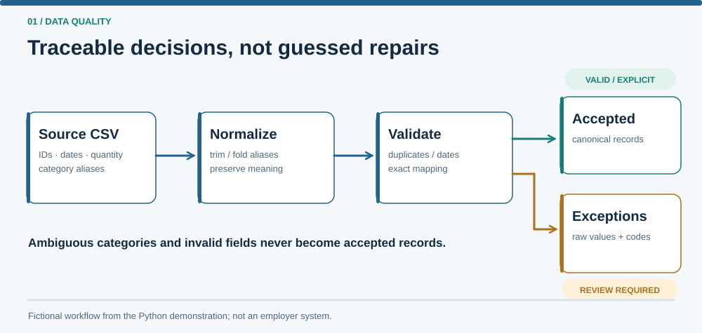

Professional work and public-demo boundary
Relevant professional responsibility
In my professional role, I led an accuracy-first migration of approximately 2,500 inventory records into an in-house quoting module. I coordinated five review rounds with sales and product teams to resolve ambiguous equipment rules and legacy free-text entries before launch.
Scope of this public demonstration
This public Python pipeline reconstructs selected validation and exception-handling principles using fictional records, invented mapping rules and independently reproducible checks. It is not the employer's migration implementation or its data.
The problem
Inconsistent inventory records can contain missing identifiers, ambiguous categories and quantities that look similar but mean different things. This fictional equipment-inventory demonstration separates safe formatting changes from decisions that require human review, while retaining a trace from each result to its source row.
System diagrams and synthetic results


outputs/summary.json, not employer data.What the demonstration contains
A command-line pipeline generates a seeded fictional sample, normalizes and validates its records, and writes three outputs: cleaned_records.csv, exceptions.csv and summary.json. Each data row receives one disposition. Multiple issues on one rejected row remain separate from the rejected-row count.
Technical approach
Source-row numbers identify records independently of business IDs. IDs are trimmed and case-sensitive; every occurrence of a duplicated normalized ID is rejected. Explicit quantity zero is valid, while a blank quantity is missing. Dates must be real calendar dates in ASCII YYYY-MM-DD form.
Category aliases use exact normalized matches. An unknown alias is rejected; an alias such as the fictional pressure unit, which maps to both PUMP and SENSOR, is sent to review rather than guessed. Exceptions retain raw values and error codes. Duplicate input-column names are fatal configuration errors because silently selecting one could change business meaning.
Validation and results
During the first review round, I also ran the documented commands myself in PowerShell, and the outputs matched the agents' reports. The results below, including later corrections, are agent-run, on Windows 11 with Python 3.13.15 and pytest 9.1.1. All counts are synthetic scenario results.
| Public-demo claim | Command and result | Status |
|---|---|---|
| The synthetic sample reconciles | python -m dq_pipeline demo, run twice: 60 input = 37 accepted + 23 rejected, with 23 issues |
VERIFIEDagent-run |
| Validation regressions pass, including duplicate headers | python -m pytest -q: 21 passed |
VERIFIEDagent-run |
| Reruns replace outputs reproducibly | Two demo runs produced byte-identical generated files |
VERIFIEDagent-run |
| Row counts remain distinct from issue counts | A separate hand-derived fixture gives 7 input = 1 accepted + 6 rejected, with 8 issues | VERIFIEDagent-run |
| Other operating systems and Python versions, performance | Not tested | NOT VERIFIED |
Tradeoffs and limitations
This is an in-memory, single-file reduced-scope demonstration with invented policies and 60 sample rows. It provides no fuzzy matching, database, UI or review workflow. Completely empty input lines are skipped. Input and configuration validation happen before any output is written, but an output I/O failure can leave partial files; the outputs have no transactional multi-file guarantee. Generator stability across untested Python versions is not verified.
My contribution
I co-developed the original agent prompt kit for this project with AI assistance, and I provided the business context, project purpose and initial architecture outline. I set requirements, evaluation criteria, edge-case priorities and approval decisions.
I used a planner-and-builder AI workflow to produce the implementation and supporting documentation. AI tools performed the implementation work, while I remained responsible for the project's direction and final approvals.
During the first review round, I personally followed the project's run-and-check instructions in PowerShell and confirmed that the outputs matched the agents' reports. Later corrections and their regression results were verified by agents.
What I learned
I learned to distinguish missing information from an explicit zero and to preserve that distinction throughout validation. I also became more deliberate about using deterministic transformations only when the available facts support a clear decision. Ambiguous mappings belong in a traceable review process rather than being resolved through an undocumented guess.
Academic connections
These are conceptual connections to the reasoning described in Applied Thinking. They do not claim formal implementation of every theory.
Source and reproducibility
The README documents environment setup and the python -m dq_pipeline demo entry point.
Windows PowerShell, from the repository root:
py -m venv .venv
.venv\Scripts\python -m pip install -r requirements.txt
.venv\Scripts\python -m dq_pipeline demo
.venv\Scripts\python -m pytestTested environment: Windows 11, Python 3.13.15 (agent-run).
The Python projects run locally from their repositories. This static site shows their recorded results; it does not run them.
Independence statement: This is an independently developed demonstration using fictional data and general technical methods. Its counts are synthetic results, not evidence about an employer system or real operational performance.